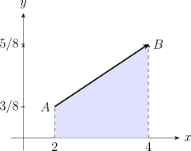

2.3 Continuous Random Variables
Definition 2.3.1. A random variable \(X\) is continuous if its range \(R_X\) is an uncountable interval (or a collection of intervals) of real numbers. \(X\) can take on any value within a given range.
Definition 2.3.2. For a continuous random variable, we define a probability density function, \(f_X(x)\), such that:
- \(f_X(x) \geq 0\) for all \(x \in \mathbb {R}\).
- \(\int _{-\infty }^{\infty } f_X(x) \, dx = 1\) (The total area under the curve is 1).
- For a continuous random variable, the probability of assuming any exact value is zero: \(P(X = x) = 0\).
- Because \(P(X=x) = 0\), the inclusion or exclusion of endpoints in an interval does not change the probability: \[P(a < X < b) = P(a \leq X \leq b) = P(a \leq X < b) = P(a < X \leq b)\]
- Probability is found by integrating the p.d.f over the desired interval: \[P(a < X < b) = \int _{a}^{b} f_X(x) \, dx.\]
Example 2.3.4. Let \(X\) be a random variable with the following p.d.f \[f_X(x) = \begin {cases} \frac {x+1}{8}, & 2 < x < 4 \\ 0, & \text {elsewhere} \end {cases}\]

-
Show that \(f(x)\) is probability density function.
Solution. \[\text {Area} = \int _{2}^{4} \frac {x+1}{8} \, dx = \left [ \frac {(x+1)^2}{16} \right ]_{2}^{4} = \frac {(4+1)^2 - (2+1)^2}{16} = \frac {25-9}{16} = 1\] □
-
Find \(P(X>3.5)\)
Solution. \[P(X > 3.5) = \int _{3.5}^{4} \frac {x+1}{8} \, dx = \left [ \frac {(x+1)^2}{16} \right ]_{3.5}^{4} = \frac {5^2 - 4.5^2}{16} = \frac {25 - 20.25}{16} = \frac {4.75}{16}.\] □
-
Find \(P(2.4<X<3.5)\)
Solution. \[P(2.4 < X < 3.5) = \int _{2.4}^{3.5} \frac {x+1}{8} \, dx = \left [ \frac {(x+1)^2}{16} \right ]_{2.4}^{3.5} = \frac {4.5^2 - 3.4^2}{16} = \approx 0.5431\] □
| Property | Discrete Random Variable | Continuous Random Variable |
| Support (\(R_X\)) | Finite or Countably Infinite | Uncountable Interval(s) |
| Function Type | Probability Mass Function (PMF) | Probability Density Function (PDF) |
| Notation | \(f(x) = P(X = x)\) | \(f(x)\) (where \(P(X=x) = 0\)) |
| Conditions | \(0 \leq f(x) \leq 1\) | \(f(x) \geq 0\) |
| Total Value | \(\sum _{x \in R_X} f(x) = 1\) | \(\int _{-\infty }^{\infty } f(x) dx = 1\) |
| Interval Prob. | \(P(a \le X \le b) = \sum _{x=a}^{b} f(x)\) | \(P(a \le X \le b) = \int _{a}^{b} f(x) dx\) |
2.3.1 Practice problems
Problem 2.3.1. [Tutorial Sheet 2] A continuous random variable \(X\) has p.d.f. \(f(x) = k(x+2)^2\) for \(0\leq x\leq 2\). Find
- the value of the constant \(k\);
- the mean and standard deviation of \(X\);
- the c.d.f. of \(X\);
- \(P(X\geq 1)\);
- \(P\left (\frac {1}{2}<X<\frac {3}{2}\right )\).
Show solution
Solution. (a). A density must integrate to 1 over its range: \[\int _0^2 k(x+2)^2\,dx = k\left [\frac {(x+2)^3}{3}\right ]_0^2 = k\cdot \frac {64-8}{3} = \frac {56k}{3} = 1 \implies k = \frac {3}{56}.\]
(b). Expanding \((x+2)^2 = x^2+4x+4\), \begin {align*} E(X) &= \frac {3}{56}\int _0^2 (x^3+4x^2+4x)\,dx = \frac {3}{56}\left [\frac {x^4}{4}+\frac {4x^3}{3}+2x^2\right ]_0^2\\ &= \frac {3}{56}\left (4+\frac {32}{3}+8\right ) = \frac {3}{56}\cdot \frac {68}{3} = \frac {17}{14} \approx 1.214,\\ E(X^2) &= \frac {3}{56}\int _0^2 (x^4+4x^3+4x^2)\,dx = \frac {3}{56}\left [\frac {x^5}{5}+x^4+\frac {4x^3}{3}\right ]_0^2\\ &= \frac {3}{56}\cdot \frac {496}{15} = \frac {62}{35}. \end {align*}
Hence \[\operatorname {Var}(X) = \frac {62}{35}-\left (\frac {17}{14}\right )^{2} = \frac {1736-1445}{980} = \frac {291}{980} \approx 0.2969,\] and the standard deviation is \(\sqrt {291/980} \approx 0.545\).
(c). For \(0\leq x\leq 2\), \[F(x) = \int _0^x \frac {3}{56}(t+2)^2\,dt = \frac {(x+2)^3-8}{56},\] so \[F(x) = \begin {cases} 0 & x<0\\[2pt] \frac {(x+2)^3-8}{56} & 0\leq x\leq 2\\[6pt] 1 & x>2.\end {cases}\] As a check, \(F(2) = (64-8)/56 = 1\).
(d). \[P(X\geq 1) = 1-F(1) = 1-\frac {27-8}{56} = 1-\frac {19}{56} = \frac {37}{56}.\]
(e). The two constants \(-8\) cancel when the c.d.f. is differenced: \begin {align*} P\left (\tfrac 12<X<\tfrac 32\right ) &= F\left (\tfrac 32\right )-F\left (\tfrac 12\right ) = \frac {1}{56}\left [\left (\tfrac {7}{2}\right )^{3}-\left (\tfrac {5}{2}\right )^{3}\right ]\\ &= \frac {1}{56}\cdot \frac {343-125}{8} = \frac {218}{448} = \frac {109}{224}. \end {align*}
Problem 2.3.2. [Tutorial Sheet 2] A continuous random variable \(X\) has p.d.f. \[f(x) = \begin {cases} kx & 0\leq x<1\\ k & 1\leq x<3\\ k(4-x) & 3\leq x<4\\ 0 & \text {otherwise.} \end {cases}\] Find
- the value of the constant \(k\);
- \(E(X)\) and \(\operatorname {Var}(X)\);
- the c.d.f. of \(X\);
- \(P(X>2)\);
- \(P\left (\frac {1}{2}<X\leq \frac {7}{2}\right )\).
Show solution
Solution. (a). Integrate piece by piece and set the total to 1. The graph is a trapezium – a straight rise, a flat top, a straight fall – so the areas can also be read off geometrically: \[\underbrace {\int _0^1 kx\,dx}_{k/2} + \underbrace {\int _1^3 k\,dx}_{2k} + \underbrace {\int _3^4 k(4-x)\,dx}_{k/2} = 3k = 1 \implies k = \frac {1}{3}.\]
(b). Before integrating, notice that the density is symmetric about \(x=2\): the rising piece on \([0,1)\) mirrors the falling piece on \([3,4)\), and the flat piece is centred at 2. So \(E(X) = 2\) without any calculation. Confirming it, \[E(X) = \frac 13\left [\int _0^1 x^2\,dx + \int _1^3 x\,dx + \int _3^4 x(4-x)\,dx\right ] = \frac 13\left [\frac 13+4+\frac {5}{3}\right ] = 2.\] For the variance, \[E(X^2) = \frac 13\left [\int _0^1 x^3\,dx + \int _1^3 x^2\,dx + \int _3^4 x^2(4-x)\,dx\right ] = \frac {29}{6},\] so \[\operatorname {Var}(X) = \frac {29}{6}-2^2 = \frac {5}{6} \approx 0.833.\]
(c). Accumulate the pieces, carrying forward the area already covered: \[F(x) = \begin {cases} 0 & x<0\\[2pt] \frac {x^2}{6} & 0\leq x<1\\[6pt] \frac {x}{3}-\frac {1}{6} & 1\leq x<3\\[6pt] -\frac {x^2}{6}+\frac {4x}{3}-\frac {5}{3} & 3\leq x<4\\[6pt] 1 & x\geq 4. \end {cases}\] The pieces agree at the joins – \(F(1)=\tfrac 16\), \(F(3)=\tfrac 56\) – and \(F(4)=1\).
(d). \[P(X>2) = 1-F(2) = 1-\left (\frac 23-\frac 16\right ) = 1-\frac 12 = \frac 12,\] which is what the symmetry about \(x=2\) already told us.
(e). \[P\left (\tfrac 12<X\leq \tfrac 72\right ) = F\left (\tfrac 72\right )-F\left (\tfrac 12\right ) = \frac {23}{24}-\frac {1}{24} = \frac {11}{12}.\]
Problem 2.3.3. [Assignment] The continuous random variable \(X\) has probability density function \(f_X(x) = Kx^{2}\) for \(-1\leq x\leq 0\). Find
- the appropriate value of \(K\);
- the mean and the variance of \(X\).
Show solution
Solution. (a). \[\int _{-1}^{0}Kx^{2}\,dx = K\left [\frac {x^{3}}{3}\right ]_{-1}^{0} = K\left (0+\frac {1}{3}\right ) = \frac {K}{3} = 1 \implies K = 3.\] Note that \(K\) is positive even though the range is negative, because \(x^{2}\) is positive throughout – a density must never be negative.
(b). \[E(X) = \int _{-1}^{0}3x^{3}\,dx = 3\left [\frac {x^{4}}{4}\right ]_{-1}^{0} = 3\left (0-\frac {1}{4}\right ) = -\frac {3}{4},\] \[E(X^{2}) = \int _{-1}^{0}3x^{4}\,dx = 3\left [\frac {x^{5}}{5}\right ]_{-1}^{0} = 3\left (0+\frac {1}{5}\right ) = \frac {3}{5},\] \[\operatorname {Var}(X) = \frac {3}{5}-\left (-\frac {3}{4}\right )^{2} = \frac {48-45}{80} = \frac {3}{80} = 0.0375.\] A negative mean is perfectly sensible here: all the probability sits on \([-1,0]\), so \(X\) is negative with certainty. The density is heaviest near \(-1\), which pulls the mean below the midpoint \(-0.5\).
Problem 2.3.4. [Assignment] Consider the probability density function \(f_X(x) = 2(1-x)\) for \(0\leq x\leq a\).
- Determine the value of \(a\).
- Find \(P\left (\frac {1}{2}<X<3\right )\).
Show solution
Solution. (a). The density must integrate to 1 over its range: \[\int _0^{a}2(1-x)\,dx = \left [2x-x^{2}\right ]_0^{a} = 2a-a^{2} = 1.\] So \(a^{2}-2a+1 = 0\), that is \((a-1)^{2} = 0\), giving \(a = 1\) as a repeated root. This is also the only sensible answer for another reason: \(2(1-x)\) is negative for \(x>1\), and a density cannot be negative, so the range could not have extended past 1 in any case.
(b). The upper limit 3 lies outside the range, where the density is zero, so the interval effectively stops at 1: \[P\left (\tfrac 12<X<3\right ) = P\left (\tfrac 12<X<1\right ) = \int _{1/2}^{1}2(1-x)\,dx = \left [2x-x^{2}\right ]_{1/2}^{1} = 1-\frac {3}{4} = \frac {1}{4}.\] Integrating all the way to 3 without noticing this would add a negative contribution and give a wrong answer – always check the stated range before substituting limits.
Questions on this section
Stuck on something here? Ask below and it stays attached to this topic.